Explore Toronto
A Brief History
Toronto began as the British town of York on Lake Ontario and became the capital of Ontario after Confederation in 1867. Victorian brick districts, the CN Tower, and waterfront renewal record waves of British, Irish, Italian, Caribbean, and Asian immigration. The city is Canada's largest metropolitan centre and financial capital. Municipal archives, parish records, and surviving architecture help explain how the city connected to wider regional trade routes, court patronage, and modern civic rebuilding after industrial and wartime change.
Attractions Map
Top Sights & Activities
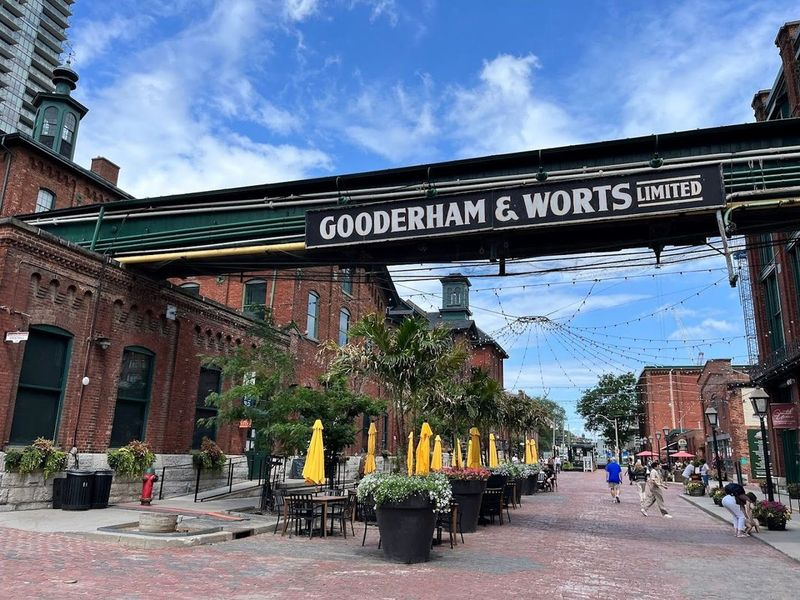
The Distillery Historic District
The Distillery Historic District in Toronto is a vibrant area that has transformed from a former distillery into a collection of boutiques, galleries, cafes, and restaurants. The pedestrian-only neighborhood boasts buildings dating back to the 1830s and was once home to the largest distillery in Canada, Gooderham & Worts.
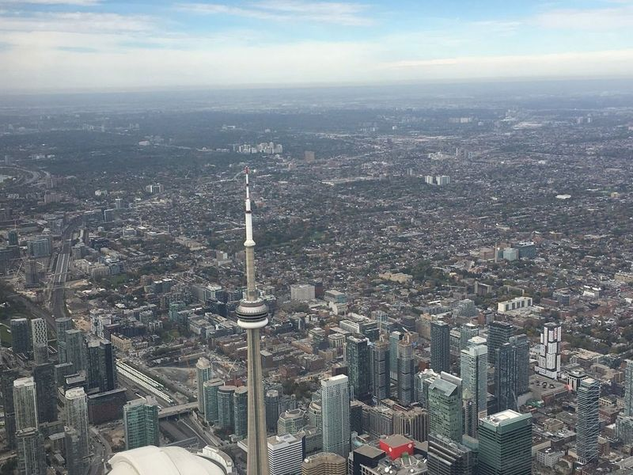
CN Tower
The CN Tower is a landmark in Toronto, standing at over 553 meters tall. It's known for its glass floor and revolving eatery offering panoramic views of the city. Visitors can also experience EdgeWalk, a thrilling hands-free walk around the outside ledge of the tower. As one of the Seven Wonders of the Modern World, it's a Canadian icon and symbol of Toronto.
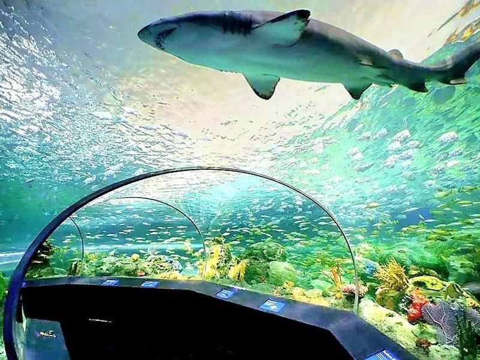
Ripley's Aquarium of Canada
Ripley's Aquarium of Canada, located in downtown Toronto near the Rogers Centre and CN Tower, is a modern and expansive indoor aquarium showcasing thousands of marine species. From barracudas to rays, jellyfish, octopi, moray eels, and giant sharks, the aquarium offers a diverse range of sea creatures. Visitors can enjoy educational behind-the-scenes tours, interactive displays, and even in-water experiences with Cownose and Southern Stingrays.
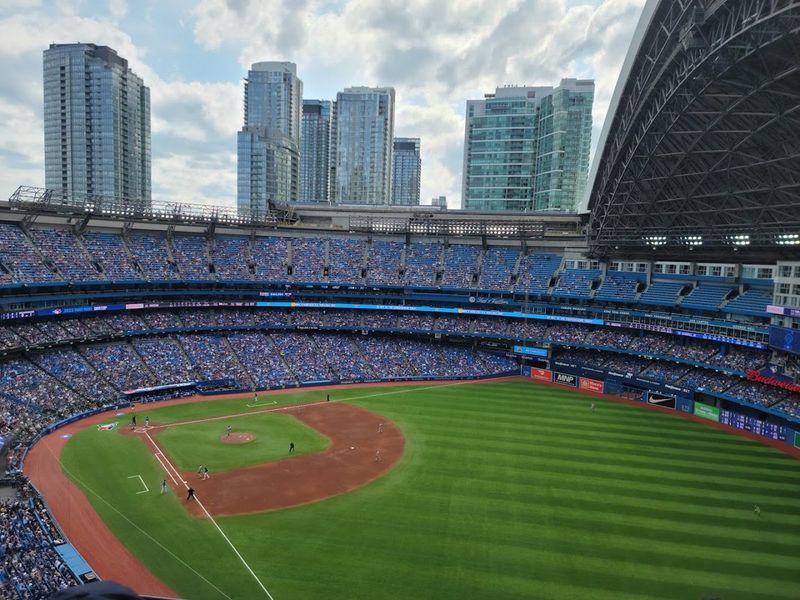
Rogers Centre
Rogers Centre, formerly known as the SkyDome, is a versatile indoor stadium that has been a prominent feature of Toronto's entertainment scene since its opening in 1989. It is most famous for being the home of the Toronto Blue Jays baseball team and for its innovative retractable roof. The stadium also hosts a wide range of events including concerts, auto shows, circuses, and more.
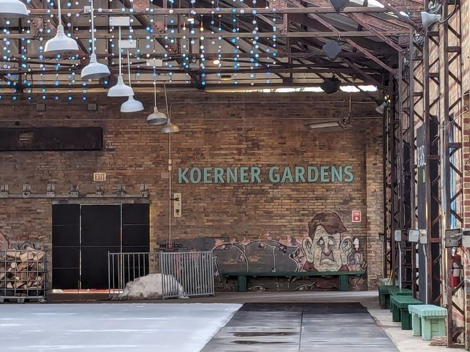
Evergreen Brick Works
Evergreen Brick Works is a vibrant eco-oriented complex in Toronto, Canada. It was originally the Don Valley brickworks, which played a crucial role in building the city. After its closure in the 1980s, efforts began to transform the site into an ecological center and social enterprise. Today, it stands as the first large-scale community environmental center in Canada. The space features a weekend farmer's market, gardening store, event space, and nature trails for visitors to explore.
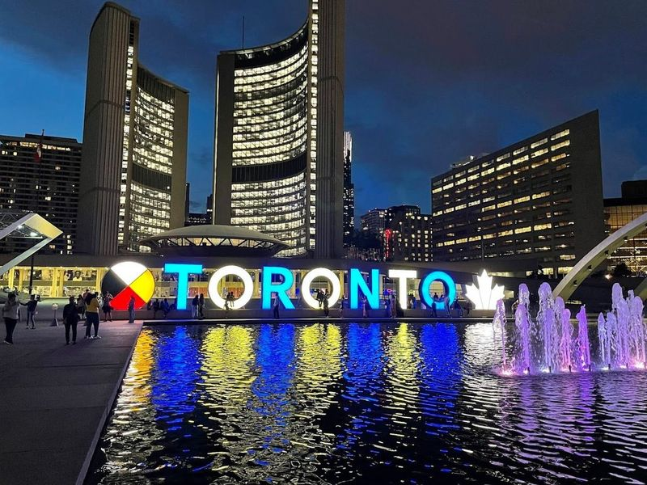
Nathan Phillips Square
Nathan Phillips Square, situated in the heart of downtown Toronto, is a bustling public space known for hosting events year-round. In the winter, it transforms into a lively ice rink. The square features a reflecting pool and the TORONTO sign, making it a popular spot for photos. Surrounded by landmarks like City Hall and the Eaton Centre, it's an ideal location to soak in the city's vibrant atmosphere and explore nearby attractions.
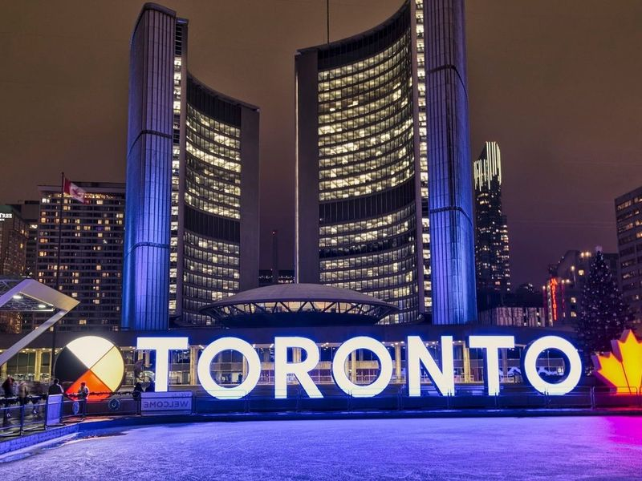
Toronto City Hall
Toronto City Hall, designed by Finnish architect Viljo Revell, is a modern and structure that serves as the mayor's office. It has gained popularity as a filming location for various productions, including Star Trek: The New Generation and The Handmaid's Tale. The building, which opened in 1965, is a favorite among locals and visitors alike. Its adjacent Nathan Philips Square hosts art fairs, special events, and a popular skating rink in winter.
Toronto Old City Hall
Toronto Old City Hall, constructed in 1899, is a Richardsonian Romanesque civic building with a notable clock tower and intricate gargoyles. Designed by local architect Edward James Lennox, it boasts a beautiful Romanesque Revival style featuring arches, towers, and impressive carvings. Once the largest civic building in North America, it remains an emblematic construction in the city's landscape.
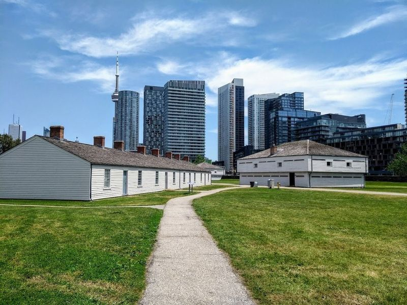
Fort York National Historic Site
Located in the heart of Toronto, Fort York National Historic Site is a 43-acre landmark that offers visitors a glimpse into Canada's rich history. With original War of 1812 buildings and the 1813 battle site, this well-preserved fort provides an immersive experience. From dramatic reenactments to an extensive collection of artifacts, Fort York tells the story of its pivotal role during the war.
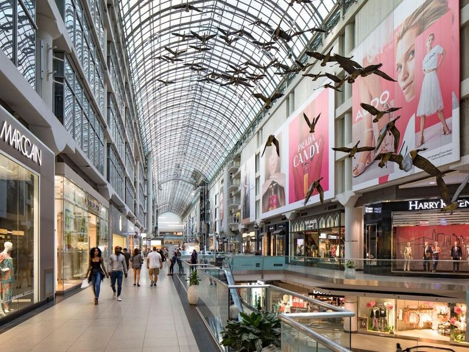
CF Toronto Eaton Centre
CF Toronto Eaton Centre is a historic and bustling mall located in downtown Toronto, spanning two blocks and housing over 250 retail stores. Modeled after the Galleria Vittorio Emanuele II in Milan, it features glass ceilings, multi-level walkways, and impressive art installations. During the holiday season, the mall is adorned with festive decorations including a 108-foot-tall Christmas tree.
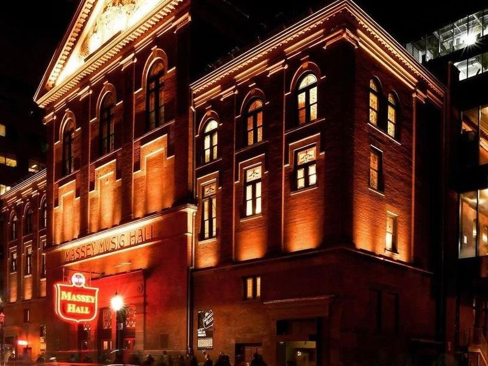
Massey Hall
Massey Hall, a historic music venue in Toronto, has been hosting legendary shows for over a century. Originally gifted to the city by the Massey family in 1894, it continues to fulfill its mission of showcasing international arts and entertainment while supporting Canadian talent. With renowned acoustics and a capacity of 2753 seats, Massey Hall hosts not only concerts but also lectures, film premieres, comedy shows, and more.
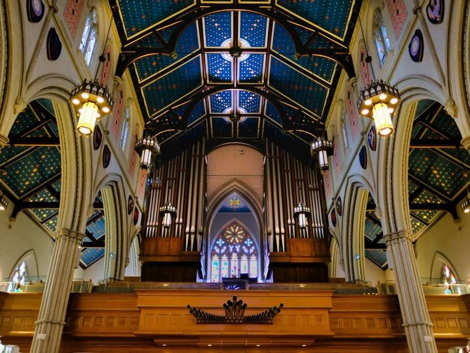
St. Michael's Cathedral Basilica
St. Michael's Cathedral Basilica, constructed in 1848, is a Catholic cathedral in the Gothic Revival style. It features impressive ceilings and a towering 79-meter spire. The idea for this magnificent building came from Father Michael Power, who recognized the need for an expanded place of worship to accommodate the growing Catholic community. Toronto architect William Thomas was responsible for designing St. Michael's Cathedral, while John Harper led the construction project starting in 1845.
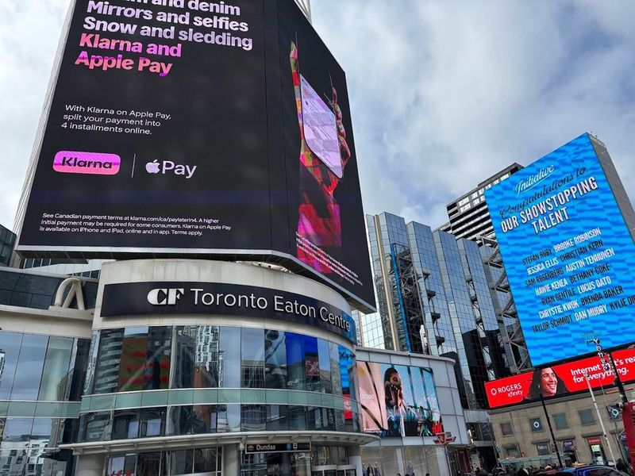
Sankofa Square
Yonge-Dundas Square is a vibrant outdoor space that hosts various events, including concerts, movies, and community gatherings. It will feature an immersive art installation by photographer Ed Burtynsky as part of the Luminato festival. The square is located on Yonge Street, which spans different neighborhoods with unique atmospheres and vibes. Walking along Yonge Street offers a diverse cultural experience, reflecting Toronto's multiculturalism.
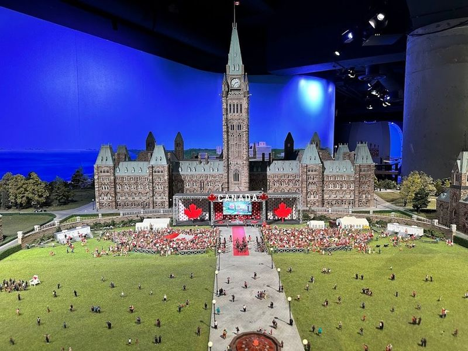
Little Canada
Little Canada is a world-renowned theme park that meticulously recreates the natural wonders and cities of Canada on a 1:87 scale. It's not just for kids - the whole family can enjoy workshops, video rooms, and detailed models of Canadian landmarks like churches, stadiums, mountains, and skyscrapers. The attention to detail is astounding; from Little Ottawa's parliament buildings to the miniature Bay of Fundy with its own tide schedule.
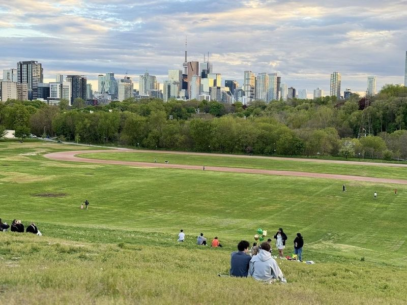
Riverdale Farm
Riverdale Farm is a charming destination located in the heart of Toronto, offering a glimpse into early 20th century Ontario farm life. Spanning 7.5 acres, this replica farm provides an immersive experience for families, allowing kids to disconnect from modern technology and explore a world without cell phones and fast food. The farm features livestock, gardens, and craft programs set amidst picturesque ponds and picnic areas within the scenic Riverdale Park West.
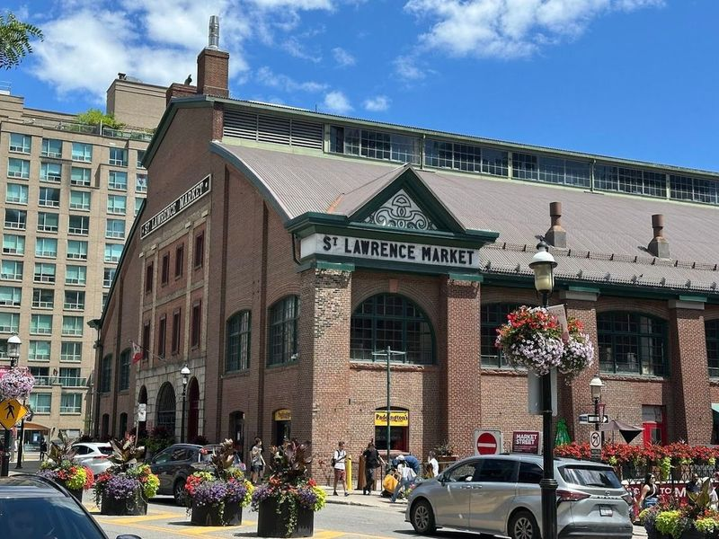
St. Lawrence Market
St. Lawrence Market is a renowned foodie destination located in Toronto's historic Old Town district. It has over 100 vendors offering a wide variety of products, including produce, antiques, baked goods, and meats. The market dates back to 1803 and is considered the oldest in Toronto. Visitors can indulge in local favorites such as peameal bacon sandwiches at Carousel Bakery or explore European-style pastries at Future Bakery.
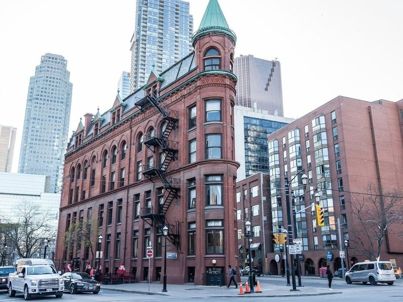
Gooderham Building
The Gooderham Building, also known as the flatiron building, is a historic redbrick structure located in Toronto's St. Lawrence Market neighborhood. Built in 1892 by the Gooderham family for their distillery business, it was one of the first flatiron-style buildings in North America. Designed by David Roberts Jr., this five-story landmark features Romanesque and French Gothic revival architecture. Today, it houses some of Toronto's most sought-after office spaces and a British-style pub.
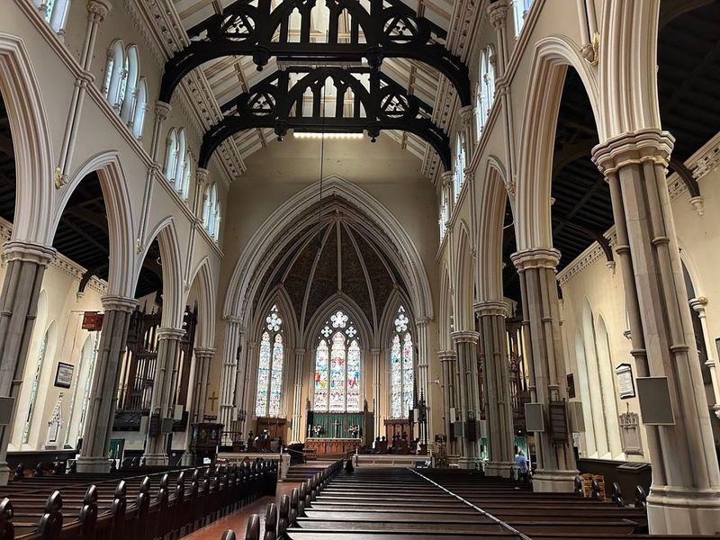
The Cathedral Church of St. James
The Cathedral Church of St. James is a Gothic Revival cathedral located in Toronto, Canada. It serves as both an Anglican parish and a cathedral, making it the spiritual center of the diocese and an important part of Toronto's civic life. The current building was constructed in 1853 after a fire destroyed the previous church and much of Toronto's Old Town. It features Canada's tallest church tower and is designated as an Ontario Heritage Property.
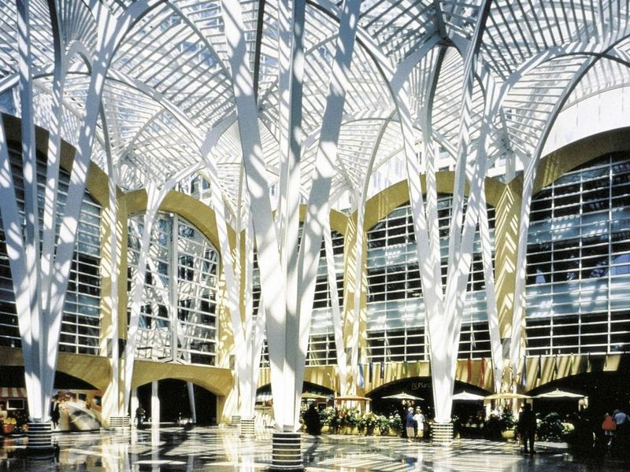
Brookfield Place
Nestled in the heart of downtown Toronto, Brookfield Place is a office complex that seamlessly blends modern architecture with historical charm. Comprising two towering structures—the Bay Wellington Tower and the TD Canada Trust Tower—this vibrant hub is connected by the Allen Lambert Galleria.
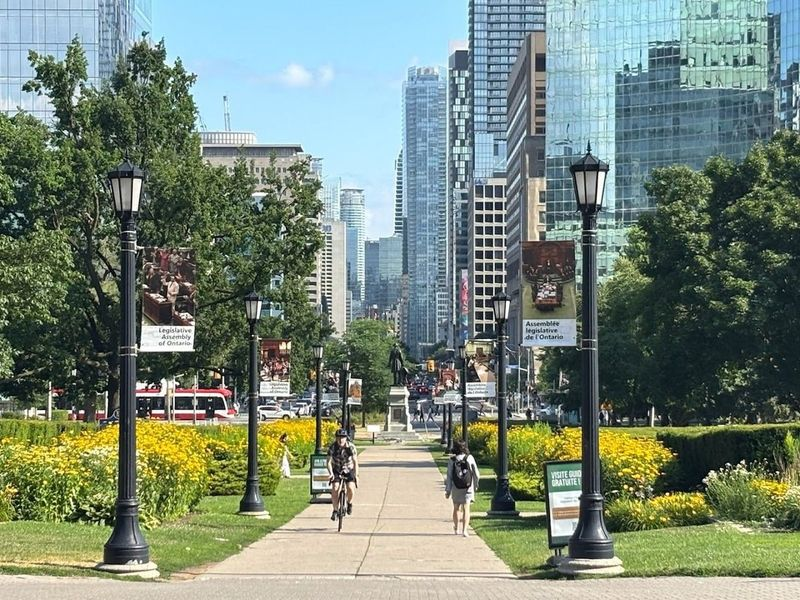
Queen's Park
Queen's Park, established in 1860, is a historic oval-shaped downtown park in Toronto. It features several statues of eminent figures and memorials, including the Ontario Legislative Building. The park boasts majestic old trees and shady spots for relaxation on warm summer days. Additionally, it is home to the Legislative Assembly of Ontario and offers free guided tours of the century-old building, providing insight into political power and lavishness.
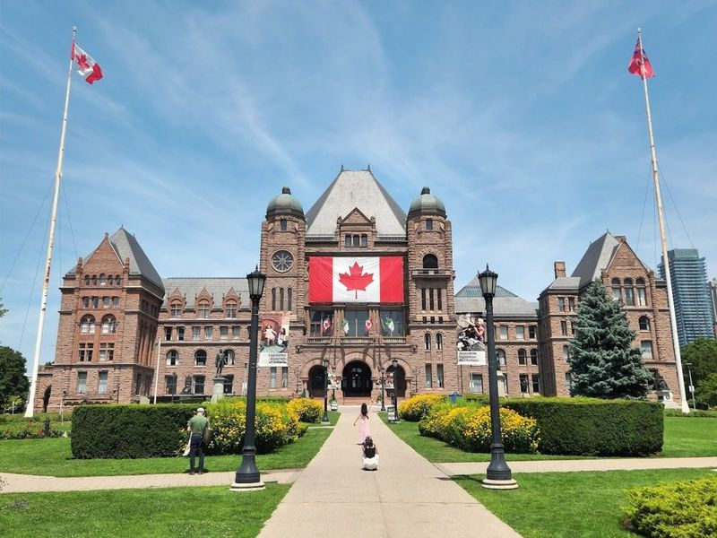
Legislative Assembly of Ontario
The Legislative Assembly of Ontario is situated in the Ontario Legislative Building, at the heart of Queen's Park. This historic building, designed by Richard A. Waite in the Richardsonian Romanesque style, was opened in 1893 after six years of construction. It houses various government offices and serves as a venue for heated debates and discussions among provincial parliament members. The building itself is made of pink granite and sandstone, showcasing its impressive architecture.
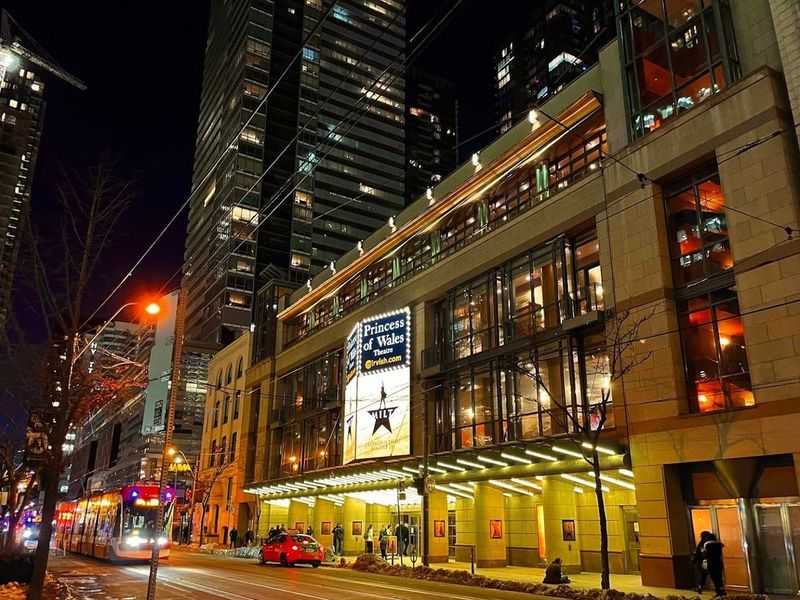
Princess of Wales Theatre
The Princess of Wales Theatre, owned by Mirvish Productions, is a historic 1,000-seat playhouse in Canada's oldest building. Originally a vaudeville house, it now hosts top musicals like 'Miss Saigon' and 'Les Misérables.' Located in Toronto's Theatre district, the theatre combines modern style with old-world charm and features a state-of-the-art sound system and one of North America's largest stages.
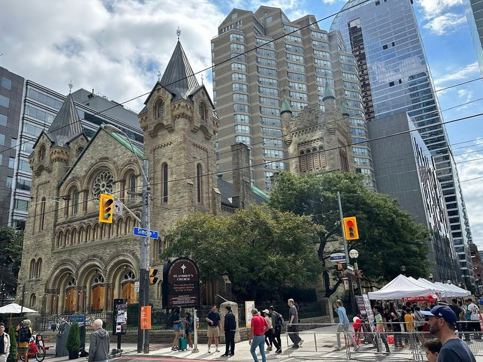
Roy Thomson Hall
Roy Thomson Hall, a renowned concert venue in Toronto, is celebrated for its exceptional acoustics and intimate atmosphere. Since its opening in 1982, it has been home to the Toronto Symphony Orchestra and has hosted a variety of performances and special events. The hall's distinctive curved design with a striking glass canopy creates a unique ambiance for patrons.
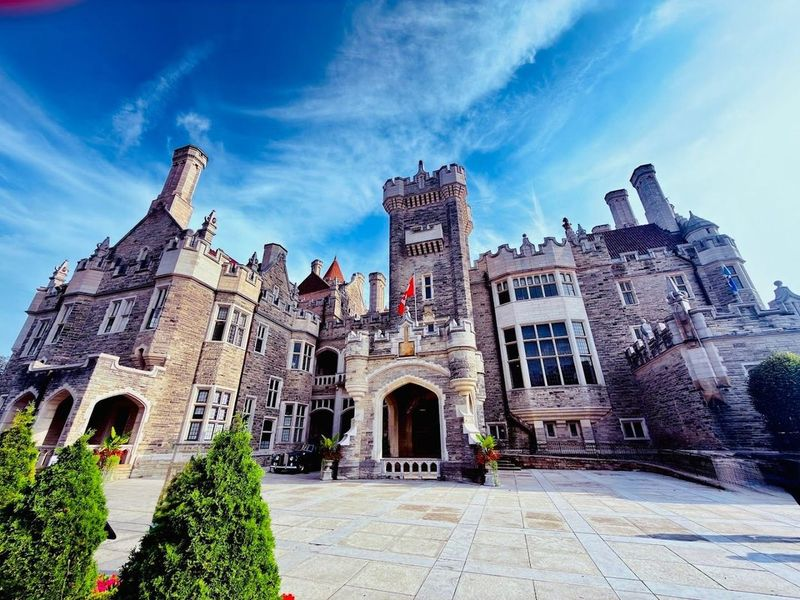
Casa Loma
Casa Loma, located about 10 minutes north of Toronto's city center, is a magnificent castle spanning 64,700 square feet. Constructed in 1914 by Canadian financier Sir Henry Pallatt, the castle showcases his love for European art and Gothic revival architecture. Visitors can explore the lavishly adorned halls and rooms, stroll through the terrace and gardens, and admire the opulent bedrooms and libraries.
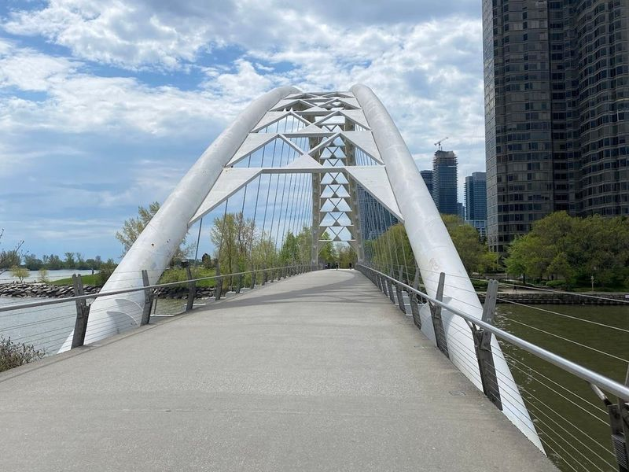
Humber Bay Arch Bridge
The Humber Bay Arch Bridge, a modern and structure in Toronto, is an essential part of the Martin Goodman Trail. Its distinctive bow-shaped arch makes it visually appealing and offers views of the Toronto skyline and Lake Ontario. This popular spot is frequented by cyclists, runners, and walkers who come to capture the sunset or enjoy the contemporary architecture that complements the cityscape.
High Park Zoo
High Park Zoo, situated within Toronto's expansive High Park, is a charming free-admission zoo that provides an intimate wildlife experience. Visitors can encounter various animal species from around the world, including bison, llamas, capybaras, peacocks, reindeer, highland cattle, wallabies, emus and sheep. The zoo offers fenced-off grassy areas where kids can pet animals like llamas and rabbits.
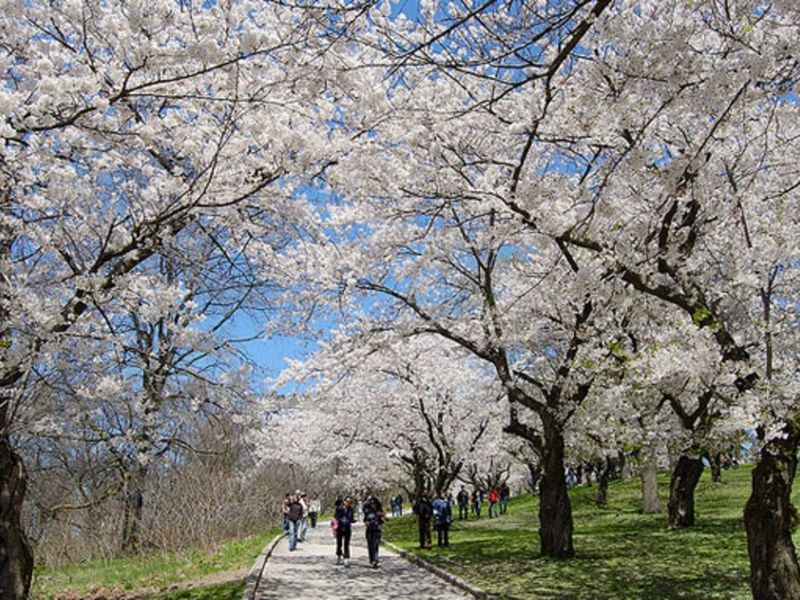
High Park
High Park is a vast green space covering almost 400 acres, offering various outdoor activities such as hiking, swimming, and tennis. The park features nature trails, woodlands, and picnic areas for visitors to explore. It also houses a zoo and greenhouse. During the summer months, outdoor theater performances are held in the park.
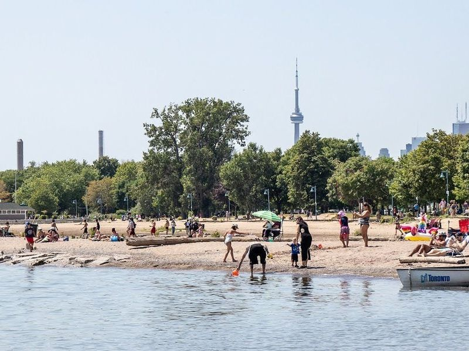
Woodbine Beach
Woodbine Beach, located in the Beach neighborhood, is a popular spot for beachgoers and fitness enthusiasts. The 15.2-hectare park features clean sand, grassy areas, and a wheelchair-accessible boardwalk leading to the water's edge. Visitors can enjoy swimming, beach volleyball courts, outdoor fitness equipment, and access to the Ashbridges Bay and Martin Goodman trails.
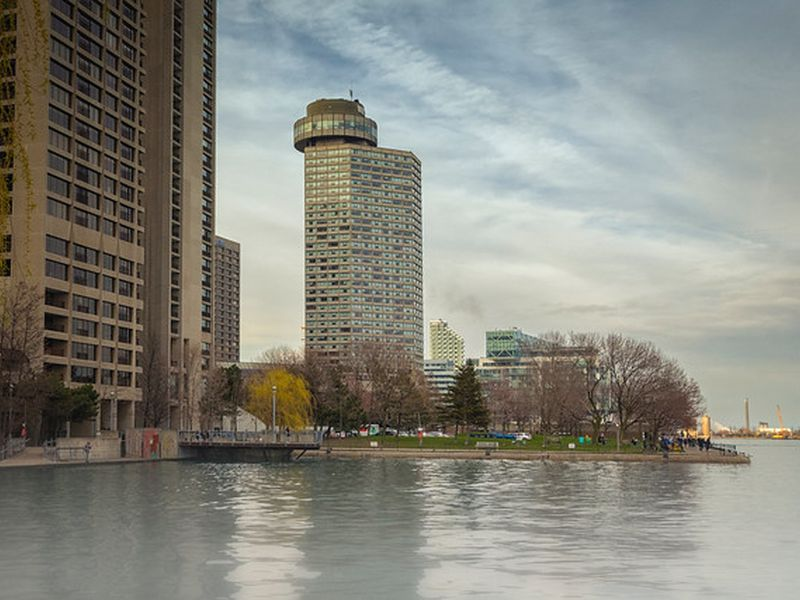
Harbour Square Park
The site forms part of Harbour Square Park's documented civic and cultural landscape within Toronto, with archives and visitor information available from municipal or regional heritage authorities. The site forms part of Harbour Square Park's documented civic and cultural landscape within Toronto, with archives and visitor information available from municipal or regional heritage authorities.
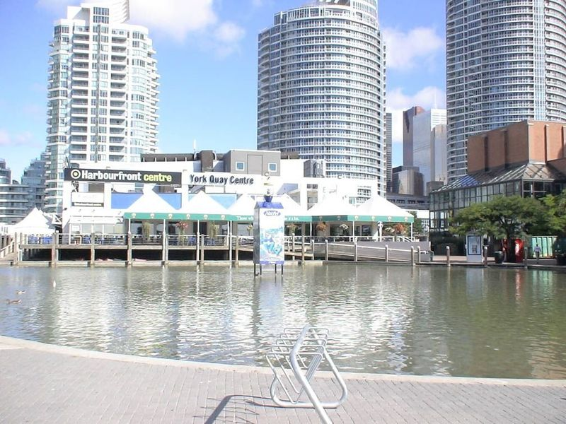
Harbourfront Centre
Harbourfront Centre is a vibrant cultural hub located along the Toronto waterfront. It hosts a variety of events and festivals throughout the year, including dance performances, art exhibitions, theater shows, and music concerts. The center also offers opportunities for water activities such as boating and sailing. Additionally, visitors can enjoy an outdoor skating rink with views of Lake Ontario, although it is currently closed for construction but will reopen in the future.
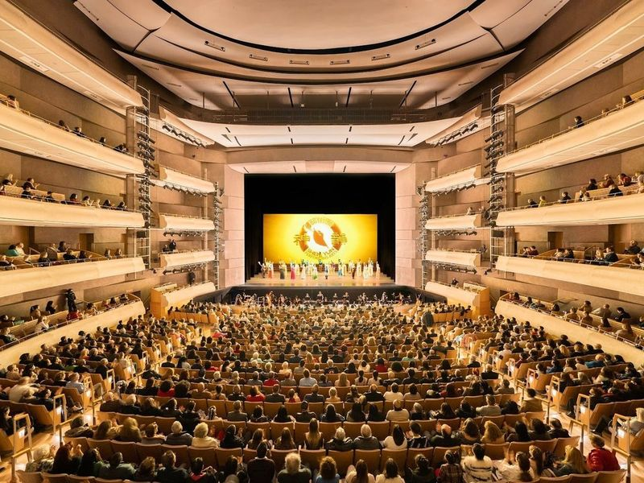
Four Seasons Centre for the Performing Arts
Located in the heart of downtown, the Four Seasons Centre for the Performing Arts is a modern building with three stages that hosts exceptional opera and ballet performances. It serves as the permanent home of Canada's national ballet and opera companies, offering brilliant lights, soaring acoustics, and a range of seating options for an show experience. Additionally, visitors can also enjoy symphonies and musical entertainment at the Roy Thomson Hall nearby.
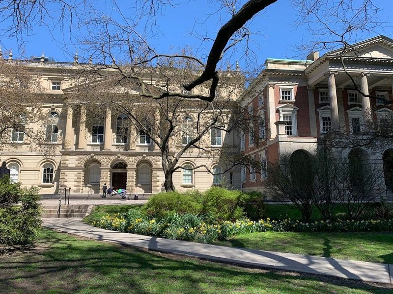
Osgoode Hall
Osgoode Hall is a heritage building in downtown Toronto that houses the Ontario Court of Appeal, the Superior Court of Justice, and the Law Society of Ontario. The hall is unique because it also has a Great Law Library with an enchanting antique design.
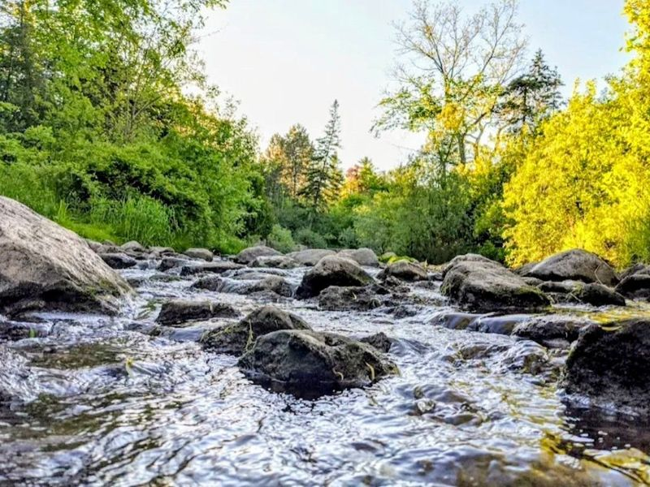
Edwards Gardens
Edwards Gardens, a former estate garden, is now home to wildflowers, perennials, and fountains. It also houses the Toronto Botanical Garden and features rock gardens, floral displays, water features like fountains and a water wheel, as well as charming wooden arch bridges. The serene space offers numerous walking trails for visitors to enjoy the natural beauty.
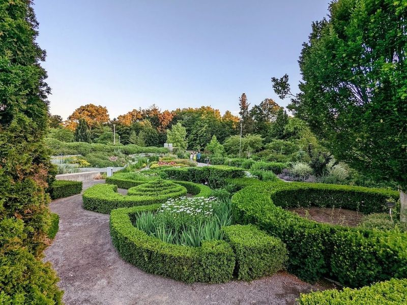
Toronto Botanical Garden
Toronto Botanical Garden is a serene and picturesque site located in the city's north end, spanning 4 acres and featuring 17 themed gardens. It offers tranquil water features, vibrant blooms, and a green-certified building with impressive glass pavilions for events. The garden is committed to connecting people with nature and provides a unique wedding venue option in Toronto. Visitors can also enjoy nearby parks along the way, making it an ideal spot for nature walks and picnics.
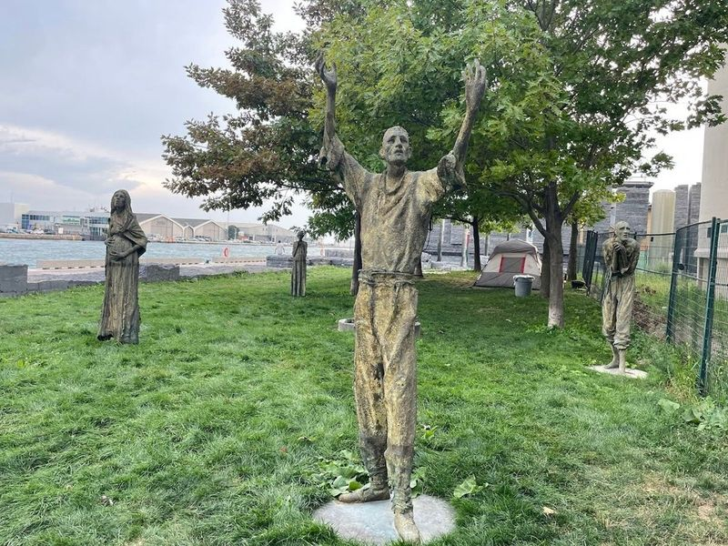
Ireland Park
Ireland Park, located along the waterfront, is a small park that pays tribute to Irish immigration. It tells the story of 38,000 Irish immigrants who sought refuge in Canada during the Great Potato Famine. The park features five bronze sculptures and symbolic artworks amidst grassy lawns and large oak trees. A limestone wall imported from Ireland bears the names of those who perished during the ship crossings.
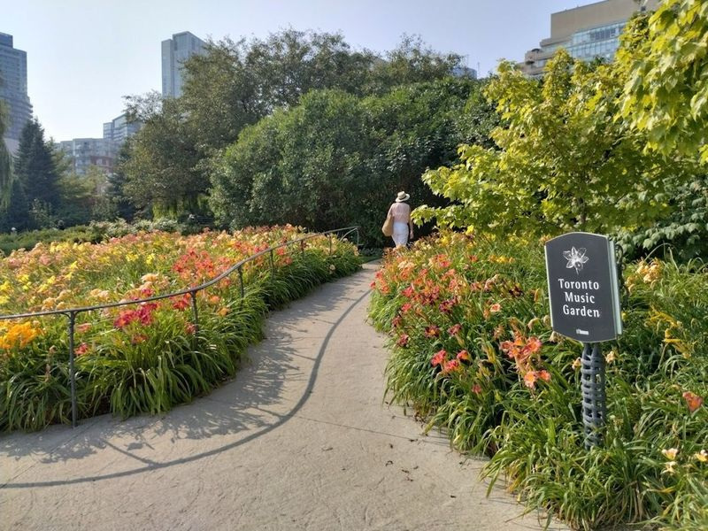
Toronto Music Garden
The Toronto Music Garden, located in the Harbourfront neighborhood of downtown Toronto, offers a serene escape with views of the CN Tower. Designed by cellist Yo-Yo Ma and landscape architect Julie Moir Messervy, this urban oasis is inspired by Johann Sebastian Bach's Cello Suite No. 1 in G Major. The garden is divided into sections representing the suite's six dance movements, creating a unique and harmonious green space.
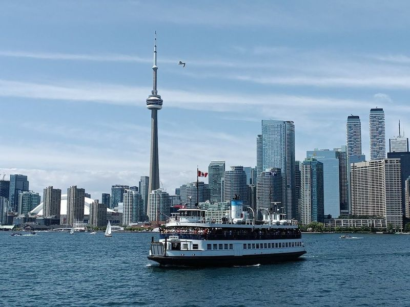
Toronto Islands
Toronto Islands, a cluster of 13 small islands in Lake Ontario, are easily accessible from downtown Toronto via a short ferry ride. The main islands for visitors are Centre Island, Wards Island, and Hanlan Point. Visitors can enjoy various recreational activities such as walking or biking along the bridges and pathways that connect the islands. There are also swimming beaches, boat rentals, and dining options available on the islands.
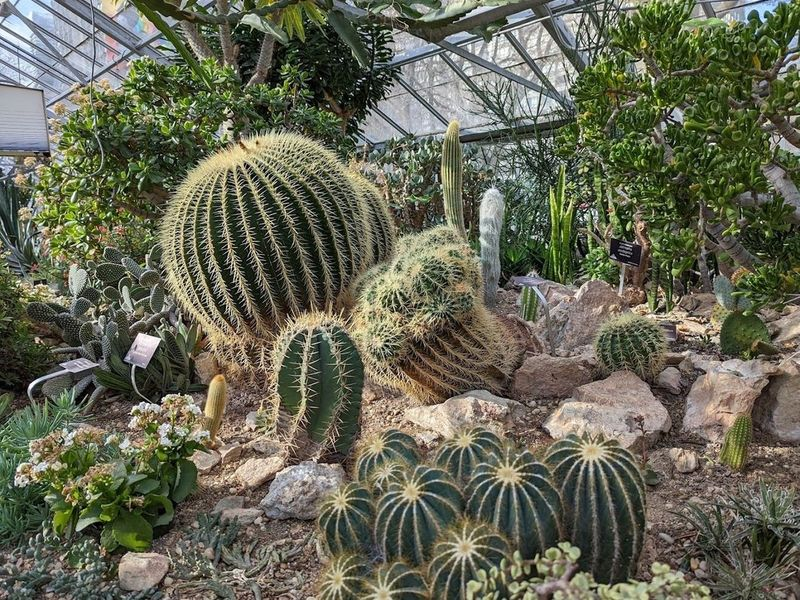
Allan Gardens
Allan Gardens Conservatory is a oasis nestled in the heart of Toronto, where history, architecture, and nature beautifully intertwine. This remarkable park features an impressive collection of plants from around the globe housed within a magnificent cast-iron and glass structure that dates back to 1910.